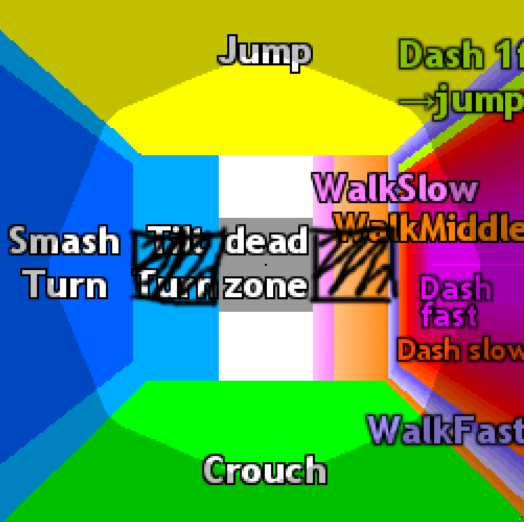
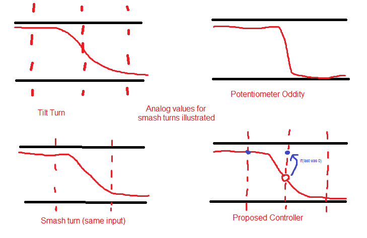

Building a Better Gamecube Controller
Draft: v0.3 | Posted: 4/12/2017 | Updated: 6/20/2017 | confidence of success: 10% | estimated time to completion: N/A | importance: Low
Abstract
I build a gamecube controller that emulates the most perfect possible OEM controller, and for the most part serves as a black box, making a ban on it utterly unenforceable (meaning it's virtually undetectable compared to a normal gamecube controller without taking it apart, even if you took it and deliberately tried to find something unfair about it -- it just feels like a really good gamecube controller).
Intro
This project has been put on hold due to Hax's "Gamecube Controller Project" which accomplishes most of the same goals as a prototype version of this project, making the benefit of completing this project "tournament legality" rather than "advantage over other controllers". If Hax's arduino-based OEM-modded controllers ultimately fail to become legal, then I may continue this project. Until then, I will pursue other things.
Up to now there's been a lot of discussion in the Super Smash Bros Melee community about non-OEM, potentially custom or modified controllers usable on gamecubes. The biggest example of this right now seems to be the SmashBox, but overall a growing sense of unease about the controller legality rules is starting to brew. Whereas in the past, simple abstract rules like "no macros, no turbos" were enough for a consistent ruleset, both injuries and more sophisticated technical ability amongst certain melee players has led to this line being blurred - are analog-digital buttons "macros"? What about the potentiometer glitch? What about controller notches?
There is a great and pressing need for a clear and self-consistent ruleset that determines which types of controllers are and are not legal. This is to say, a ruleset like "Box Controllers are (or are not) legal" would be a particularly weak ruleset since they simply have too many variables permitting people to take advantage of them. Likewise "no soldering" is similarly weak, since the whole idea of "soldering" covers a substantial amount of different modifications possible on a gamecube controller, many of which are rightly considered "controller care" rather than modifications at all (i.e. is replacing drifting potentiometers on your controller "a modification"? How about the snapback capacitor mod, which emulates a feature that other OEM controllers just have naturally?). I'm not pretending to be a tournament organizer or a community figurehead, so I won't comment on the viability of one ruleset vs another, but it's clear something very robust needs to be implemented lest everybody spend lots of time and money.
A lot of this frustration comes, I think, with inherent flaws in the OEM Gamecube Controller that frustrate players. A portion of the players interested in switching to these Box-style controllers are doing so for this reason, rather than for the supposed ergonomic benefit of making such a switch. Such a controller allows for greater precision with less room for "non-error errors" (i.e. errors that would not have been errors with the same input in a different situation).
Seeking to drastically overhaul the gamecube controller design-wise in order to solve these problems is, I think, barking up the wrong tree. While there's certainly a few good reasons you would want to play on a box controller anyways (see: Hax$) I think that if given a choice between a box controller and a "perfect" gamecube controller with none of the gameplay flaws of an OEM controller, most players would choose the latter rather than the former.
This is another one of those ideas that has been floated but not really realized (as was my Gamecube Controller with Digital -> Analog buttons), but it's quite possible and indeed not outrageously difficult or expensive to design such a controller from the ground up. What follows is my attempt to design the perfect Gamecube controller that could reasonably pass as "legal" in a tournament environment.
Hardware
Accomplishing this from a hardware perspective is simple enough, and most of what is necessary for a prototype for this controller is readily available and open source (which is extremely convenient!).
For this project I'll be using an Adafruit Pro Trinket 5V, which is a small 5 Volt microcontroller that's compatible with most typical Arduino sketches. Since we can use Arduino sketches, we can use the Gamecube Controller libraries used in most projects like this, namely the nicohood Gamecube Controller Adapter library and loosely adapt SimpleControllers' DIY Smashbox project for our purposes.

I bought a random third party controller on Amazon for ~$9 and used it for the shell + the cable (since it was labelled and saved me the trouble of figuring out which color was what on a GCC extension cable). I got a few Wii Nunchuck controllers and rewired them so that I could use them for this project. Then I got the pro trinket working on a breadboard, testing each button and analog axis one at a time. Once I was fairly confident I was all set I got to work on getting it to fit inside a shell.
I had made prototypes by modding first party controllers and was in the process of designing a pcb in Fritzing when Hax came out with his project, and this project was pretty much abandoned from that point on.
Software
Solving the Problem of Smash Turns
Smash Turns are probably the most problematic error, in terms of SSBM, on a normal OEM controller. If the game polls your controller at the wrong time, then you're simply out of luck sometimes no matter how fast you hit the analog stick backwards. This is also one of the most frustrating elements of a controller-search, since certain OEM controllers have a thing called the Potentiometer Oddity, or PODE, which allow them to have much higher dashback rates than normal controllers. Finding a controller in the wild with PODE is extremely rare (think ~1% of controllers) and purchasing one you know to have it can oftentimes be expensive.
So ideally, we'd like our controller to have perfect dashback, just like the best possible OEM controller. However, we can't control the polling timer, and we can't control our potentiometers having PODE unless there's some way of purchasing glitched potentiometers (which there isn't, as far as I'm aware). So, if we're a little clever, we can loosely emulate PODE by manipulating the value that gets read from the potentiometer and the value that gets sent to the console.
Our goal, more abstractly, is to retain dash-back as a skill-based input that has a possible 100% success rate despite the pseudo-randomness of the polling timer. We'd also like this to interfere as little as possible with the rest of your inputs (e.g. delaying every input by 1 frame and checking if your input is a dash back would not be a good solution). So what we can do is to maintain a queue of length 1 that monitors the previous analog value that was read by the potentiometers. If the previous frame was within the controller's deadzone, and this specific frame was in the tilt turn zone, then it's likely you're going for a smash turn, so we can make the controller drop this value and send a deadzone input instead. That way on the next frame you'll have reached the smash turn zone and simply "missed the polling timer" on your dash back and miss by a single frame, rather than getting a tilt turn. This is easily illustrated by this crude drawing over the input/output map of the analog stick.
...along with a crude mockup drawing of how the polling is handled vs what an oscilliscope would return from it.
You might think "but wait, this interferes with very important things like reverse laser or ftilts, and would be violating our second condition". However, we can add a caveat - if you're pressing any button during this tilt input, it will necessarily not drop the input. The only way it will drop your input is if you input a direction and nothing else, which is what happens most of the time you are doing a smash turn. As such, the only consequence this seems to have is making your slight drifts forwards and backwards come out a single frame later, and would overall likely be completely indistinguishable from a "perfect" OEM controller. As an added bonus, it's possible this condition helps deal with snapback errors as well - if the controller gets polled in the deadzone one frame and then in the b-reverse zone the next, with no other inputs pressed, it will drop the input, meaning even with really horrid snapback problems you'll only get snapback errors if you're outside the black area (unlikely) or if the controller completely skips over the deadzone between polls (unsure of the likelihood of this).
Solving the Problem of ADT Shield
ADT Shield is a lesser-known mechanic that's best described as "smash turns, but for shields". In short, if you shield and your controller gets polled halfway down your shield input, you'll get one frame of lightshield and then the digital shield on frame 2. You can still powershield projectiles with this, but curiously this leaves you completely open to physical attacks frames 2 and 3, as if you weren't shielding at all. (I imagine this is just a silly programming error that suggests the developers knew the polling timer would prevent you from powershielding sometimes, and that they tried to fix it but forgot to implement "blocking" as well as powershielding projectiles here).
There's a few possible avenues we could take with this:
The most obvious is to just not have lightpress. Many people do this and find tremendous success with it, mostly by taking the springs out of their controllers. However, there are some good uses for lightpress (L cancelling without activating tech window, lightshielding on platforms, etc) so if possible I'd like to keep it. One is just to do a similar thing we did with smash turns, where you delay analog shields by a single frame to prevent this polling problem. This is not a very good solution, though, since all your lightshields will just be delayed by a frame.
The most likely answer to this is to have one trigger wired to digital press and one trigger wired to lightpress. You can do this on an OEM controller with some slight modification, so this would be almost unquestionably legal. However, you can't quit out of matches if you do this (surprisingly deal-breaking: I did the aforementioned mod for Slox and this bothered him so much he ended up switching off it despite finding it very useful) and I personally use digital press L and R for different things (e.g. powershielding with L and wavedashing with R) so I wouldn't really like needing to reprogram my muscle memory like that.
Another fun answer is simply abusing button combinations that normally don't do anything, similar to what the 20XX hack pack does. This could mean something like activating lightshield when a trigger + the B button is pressed, since normally pressing B while in shield does nothing. This treads the line between macro and button a bit much to my liking, but it's worth playing around with just for fun.
Solving the Problem of Shield Dropping
Likewise, we can shift the input/output map of the controller such that the shield drop values land on the notches, rather than shifting the notches such that they land on the shield drop values. There are controllers out there like this, with out-of-the-box shield drops, so again we aren't doing anything particularly outrageous here. We can take two avenues here, depending on the ruleset ultimately decided upon (if one is ever decided upon).
The first, default, is to simply record the values returned at the notch, and then simply if-then change these to be shield drop values. This is a simpler solution, and it's probably the one I will go with by default.
The second, if people bring objections to having multiple coordinates reach the same output (i.e. the shield drop coordinates and the notch coordinates both being shield drop coordinates), you can simply swap them - if you hit shield drop values, return notch values, and if you reach notch values, return shield drop values. This is somewhat analogous to a button-remapping, and would certainly be less objectionable than something like the Smashbox, which remaps every button to an entirely different controller.
In either case, you have a method of obtaining perfect shield drop notches in a way that's mostly immune to decay (your notch can never drift away from the values, since if it does you can simply recalibrate the software to drift with it) and also allows you to avoid tracking down a competent controller modder like typo or kadano, both of whom have long queues and wait times.
Bonus: 1.0 Dashes
1.0 dashes are the dashes fully in a single direction, which are only possible with zero deviance off of the axis. In addition to making dash speed slightly faster, it also affects DI on certain moves, making otherwise inescapable combos escapable. It's a subtle effect, and it's one that Leffen has been leveraging to argue against the legality of box-style controllers.
With similar methodology, we can implement dashes at 1.0 values, which would simply be done by replacing the end values of each side of the X axis with x=1.0/-1.0 y=0.0 for values of |y-0| < 0.1 and |x| > .98 (or whatever). This would replace the ends of the x axis with more consistent 1.0s at the cost of making it a bit harder to get .98s (which I can't imagine being more useful in any situation). Note that zeroing out the y axis comes at no cost here, since SSBM can't interpret values less than 17 degrees off the any axis in either direction (it just interprets them as straight, despite not returning 1.0 values).
However, this comes at the cost of violating out blackbox condition, where the controller needs to be undetectable as violating of any rules. The perfect OEM controller can almost never hit 1.0 values, which is a contentious point in the legality of Box-style controllers which mostly uses 1.0 values. If controllers that can hit 1.0 values are declared "legal" then this controller will have them (to even the playing field), and if they are declared "illegal" then this controller will not have them (since that would be unfair).
Spooky, Scary Suggestions
While we've established that I am only seeking to create this controller for the powers of good, and not evil, there are unquestionable worries that this sort of controller could be used to "cheat". We've demonstrated that you can arbitrarily manipulate the input/output maps of a controller, and this could prove particularly scary or powerful, depending on the amount of paranoia you have about it.
One such concern is having specific button combinations modify other things, such as the potential for, say, the R button to modify the analog stick to make pivoting easier, or to generate Null inputs which are not possible on an OEM controller. Hax's B0XX does something similar to the former, where he has certain buttons modify the directional buttons, and the transferability of that sort of ability to a gamecube controller is something worth considering. There's also the more obvious concern of literal macros being programmed into these kinds of controllers, where the Y button does continuous frame-perfect multishines, or waveshines, or no-smoke dashdance, or maybe the dpad does perfect ledgedashes, etc etc.
That said, I think that this controller would be unquestionably legal, were smashbox controllers to be legalized. The underlying hardware is remarkably similar to the software used in most smashboxes in circulation these days, all of which have been legal in a variety of tournaments (see: Squible in New England and Hax$ in NYC), and the possibility for something like a "waveshine button" exists in both types of controllers, and shouldn't be counted against either for the sake of this discussion.
Cheating of this type is, simply put, too complicated to detect in Melee anyways, and people that are outed as cheaters or otherwise "bad" people are likely to be ostracized and/or banned completely from events anyways (see: Pichu kid, Zelgadis). It is my personal opinion that enforcability of cheating should be the responsibility of the community, and that a good witchhunt against a player that's clearly cheating in some way is the best way to deal with it. Putting this responsibility on tournament organizers is, I think, too much to ask of them.
Aside from just being really excited at the prospect of having a perfect gamecube controller and the primal satisfaction I got from manufacturing my own controller (holy moly!) I hope that this spurs community figureheads to come to a conclusion about this controller business once and for all. If this controller ends up being legal I might consider something like a kickstarter since I'm certain this kind of controller appeals to a much wider audience than the smashbox.
At the very least, it's comforting to know that Melee will not die if Nintendo elects to stop making Gamecube controllers. We can always just make more ourselves.
posted on 4/12/2017Back to Top